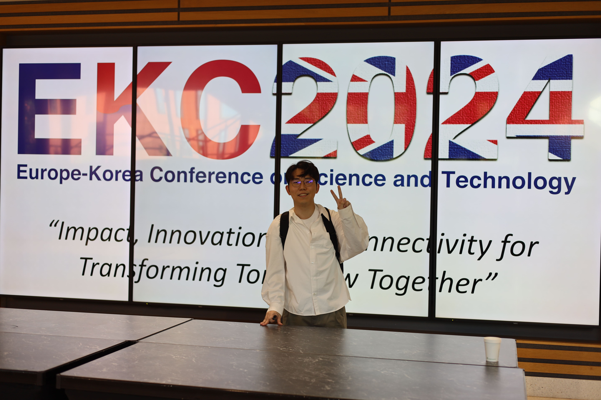
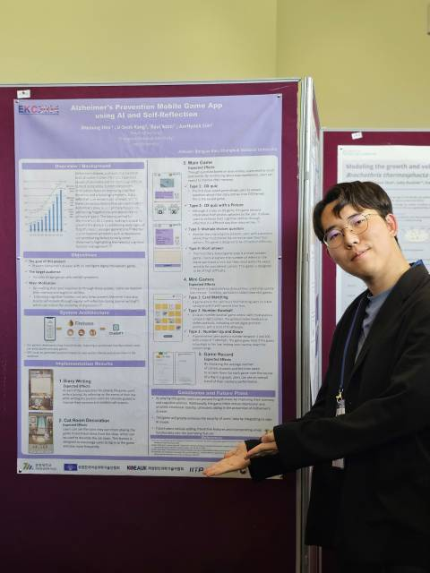

MY STORY
A moment that reshaped my academic direction and strengthened my goal of creating AI technologies that can truly help people.


In 2024, I had the honor of receiving the Outstanding Poster Award at the Europe-Korea Conference (EKC) held at the University of Warwick. This became one of the most meaningful turning points in my life.
I have always been deeply interested in using AI to create practical solutions that help people. This passion led me to design and develop a diary-based mobile game for Alzheimer’s prevention. I first presented this project at ICCAS 2024 and later introduced it in English during a poster session at EKC 2024.
At first, I had not seriously considered graduate school. However, attending EKC 2024 at the University of Warwick changed that. Listening to the stories of Korean master’s and Ph.D. students studying abroad, and receiving advice from professors, made me realize that I needed deeper knowledge and stronger research experience to build impactful technologies. That experience directly motivated my decision to pursue a Master’s program in AI and Brain Engineering.